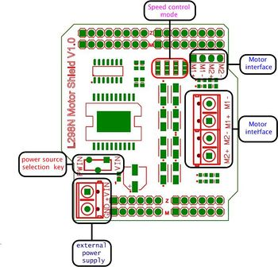

Comme nous l’avons déjà dit, il serait dangereux pour l’Arduino de le relier directement aux moteurs qui demandent bien trop de puissance.
A la place, nous allons utiliser un shied dédié (circuit emboîtable sur les broches de l’Arduino). Ce shield, ke L298 MotorChild d’ElecFreaks, fournit :
- un circuit de puissance permettant d’alimenter jusqu'à 2 moteurs,
- des commandes permettant de contrôler les moteurs à partir de l’Arduino.
La documentation officielle est ici.

Le schéma de la carte ci-dessous nous indique comment nous devons réaliser le câblage :
- le bornier seul (en bas à gauche) doit être relié à l’alimentation (bloc de pile)
- les borniers (au milieu à droite) sont destinés à être connectés aux moteurs.
Il faut noter que les mentions M1+/M1- et M2+/M2- correspondent à chaque moteur. Notez que les sens de connexion des moteurs n’est pas important : cela change juste le sens de rotation.
Au niveau Arduino, le shield s’embôite au dessus de l’Arduino. La plupart des broches sont simplement prolongées par le shield qui n’en utilise que 4 :
- broche 4 : direction moteur 1 (M1)
- broche 5 : puissance moteur 1 (E1)
- broche 6 : puissance moteur 2 (E2)
- broche 7 : irection moteur 2 (M2)
La direction (M1, M2) reçoit un simple signal binaire pour choisir la direction : 0 - en avant, 1 - en arrière (tout est relatif).
La puissance (E1, E2) reçoit un signal PWM (entre 0 et 255) et règle la vitesse de rotation.
Les caractéristiques du shield sont les suivantes :
- voltage de la logique de contrôle : 5V
- voltage des moteurs : 6.5~12v (VIN Power Supply),4.8~35V (External Power Source)
- courant our la logique de contrôle ： ≤36mA
- courant de pilotage des moteurs ：≤2A
- puissance maximale consommée ：25W（T=75℃）
- dimensions : 51x57mm
Exemple de programmation:
int E1 = 6;
int M1 = 7;
int E2 = 5;
int M2 = 4;
void setup()
{
pinMode(M1, OUTPUT);
pinMode(M2, OUTPUT);
}
void loop()
{
int value;
for(value = 0 ; value <= 255; value+=5)
{
digitalWrite(M1,HIGH);
digitalWrite(M2,HIGH);
analogWrite(E1, value); //PWM Speed Control
analogWrite(E2, value); //PWM Speed Control
delay(30);
}
}